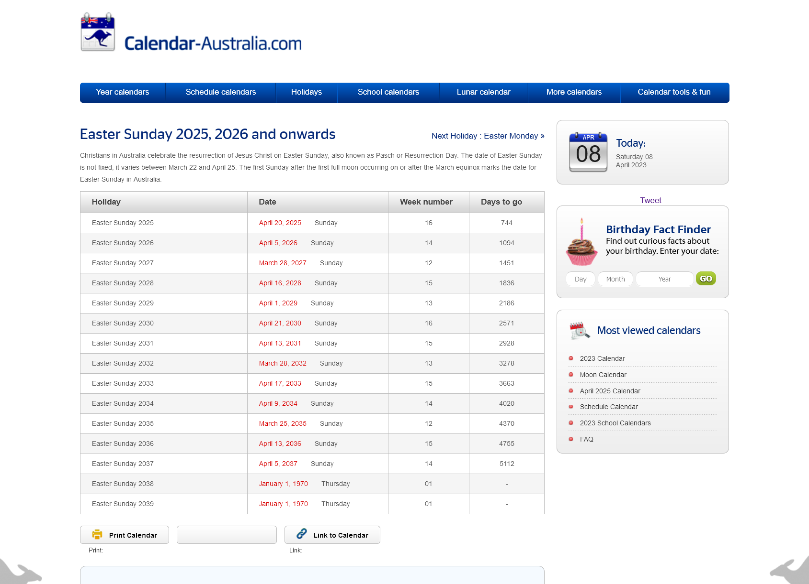

Y2K38
| page-type | Topic |
|---|
aka the Year 2038 Problem
aka we fixed the Y2K problem of storing years as two digits by storing datetimes as the number of seconds since 1970-01-01 which would be fine except the common 32 bit systems defined around 2000 will hit their ceiling on 2038-01-19.
My systems will probably be fine. But not all will. 32 bit and constrained embedded systems may still be running and still have trouble.
And some are having trouble right now.

illustrative example via https://mstdn.social/@pdwerryhouse/110115484603668761